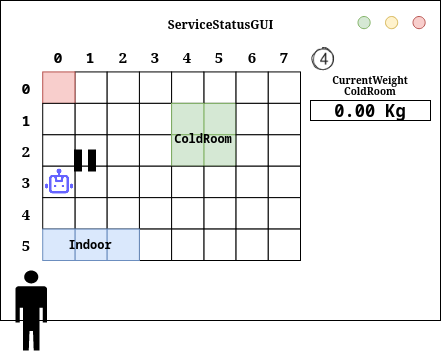
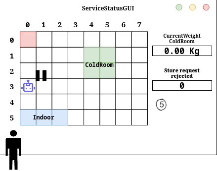

Introduction
Progetto finale di ISS, finalizzato allo sviluppo software di un magazzino refrigerato, nel
quale
vi è un robot che ha il compito di trasportare del cibo da un punto di partenza - chiamato INDOOR - alla cella
frigorifera.
Requirements
Requirement analysis
Formalizzazione dei requisiti
Per la formalizzazione dei requisiti verrà usato il linguaggio Kotlin.D'altra parte, alcuni requisiti introducono un abstraction gap, per il quale non bastano i costrutti dei linguaggi di programmazione più diffusi. Per questo motivo, la nostra software house ha creato su misura il QActor meta-model (QAK) per soddisfare questi requisiti. La documentazione di questo meta-model si trova a questo indirizzo: QActor meta-model I requisiti verranno riportati di seguito in ordine di importanza.
Service Area
Stanza rettangolare piana di dimensioni note, priva di ostacoli interni e delimitata da pareti solide. All'interno della stanza troviamo una
val serviceAreaLength : Float
val serviceAreaWidth : Float
ColdRoom
Stanza refrigerata che ha l'obiettivo di tenere al fresco il cibo che il robot deposita. La stanza può contenere fino a MAXW kg di cibo. Possiamo formalizzare la capacità della stanza con- una costante
MAXW , che rappresenta il peso massimo che la stanza può contenere. - una variabile
coldRoomCurrentWeight , che rappresenta il peso attuale di cibo contenuto nella stanza.
val MAXW : Double
var coldRoomCurrentWeight : Double
DDR Robot
Il Differential Drive Robot è un robot fisico che esegue le seguenti operazioni:- si muove avanti e indietro in linea retta
- si ferma
- ruota di 90° a destra o a sinistra
- Esecuzione di richieste di ingaggio:
Request engage : engage(CALLER) Reply engagedone : engagedone(ARG) Reply engagerefused : engagerefused(ARG) Dispatch disengage : disengage(ARG) - Esecuzione di comandi elementari di movimento:
Dispatch cmd : cmd(MOVE) Dispatch end : end(ARG) - Esecuzione di step (movimento in avanti per un tempo dato):
Request step:step(TIME) Reply stepdone : stepdone(V) Reply stepfailed : stepfailed(DURATION, CAUSE) - Esecuzione di sequenze di movimento (piani):
Request doplan:doplan(PATH,STEPTIME) Reply doplandone : doplandone(ARG) Reply doplanfailed : doplanfailed(ARG) - Esecuzione di posizionamento:
Request moverobot:moverobot(TARGETX, TARGETY) Reply moverobotdone : moverobotok(ARG) Reply moverobotfailed : moverobotfailed(PLANDONE, PLANTODO)
Transport Trolley
Il carrello di trasporto è un'entità software che deve interagire con il robot DDR. A tal fine, il carrello di trasporto deve interfacciarsi con il basicrobot. Il carrello di trasporto deve essere in grado di eseguire le stesse azioni del robot DDR, tuttavia il software fornito dal cliente in unibo.basicrobot23 è un attore, e come tale non prevede il concetto di ereditarietà, quindi il carrello di trasporto non può essere formalizzato utilizzando l'ereditarietà.Il trasport trolley ha la forma di un quadrato con dimensione del lato prefissata RD
Il trasport trolley può essere modellato come modello Qak:
Request pickup : pickup(_)
Dispatch dropout : dropout(_)
Dispatch backhome : backhome(_)
QActor transporttrolley context ctxstorageservice {
[#
val tTstate = transporttrolley.state.TransportTrolleyState(transporttrolley.state.CurrStateTrolley.IDLE)
#]
State s0 initial{
...
}
Goto idle
State idle{
...
}
Transition t0 whenRequest pickup -> pickingup
State pickingup{
...
replyTo pickUp with chargeTaken : chargeTaken(_)
}
Transition t0 whenMsg dropout -> droppingout
State droppingout{
...
}Transition t0 whenMsg backhome -> backhome
whenRequest pickup -> pickingup
State backhome{
...
}
Goto idle
Per verificare il corretto funzionamento del carrello di trasporto e capire meglio qual è il comportamento atteso, abbiamo preparato alcuni semplici test ( TestTransportTrolleyActor.kt ).
Sequenza operativa
Rappresenta le azioni che deve compiere il- Prendere un carico di cibo da un camion situato alla
INDOOR - Spostarsi dalla
INDOOR allaPORT della ColdRoom - Depositare il carico di cibo nella ColdRoom
- Fase di
PickingUp , in cui il robot deve prelevare il carico dal camion, quindi si muove verso la indoor - Fase di
DroppingOut , in cui il robot si muove verso la Port della ColdRoom e deposita il carico al suo interno
Request pickup : pickup(TICKET)
Dispatch dropout: dropout(_)
Reply chargeTaken: chargeTaken(_)
Sonar
Rappresenta l'astrazione del sensore fisico 'HC-SR04'. Il cliente ci ha giá fornito in precedenza il software relativo al sonar, formalizzando il sonar come un attoreIl software emette evneti a seconda della distanza, inoltre è possibile usare i comandi
Dispatch sonaractivate : info(ARG)
Dispatch sonardeactivate : info(ARG)
Event sonar : distance(V)

L'attore
Event obstacle : obstacle(distance)
Led
Il Led è un dispositivo di output presente nel RaspberryPi; le azioni che puó compiere sono:- Led Off: quando il Transport Trolley è in HOME
- Led On: quando il Transport Trolley è fermo
- Led Blink: quando il Transport Trolley si sta muovendo
Il comportamento del Led puó essere espresso tremite un attore Qak:
Dispatch ledCmd : ledCmd(ONOFFBLINK)
QActor ledqakactor context ctxrasp {
State s0 initial{
println("${name} STARTS")
}
Transition t0 whenMsg ledCmd -> doCmd
State doCmd{
onMsg( ledCmd : ledCmd(V) ){
[# var Cmd = payloadArg(0) #]
if [# Cmd=="on" #]{
...
} if [# Cmd=="off" #]{
...
}else{
...
}
}
}
Transition t0 whenMsg ledCmd -> doCmd
}
RD
Dimensione relativa alla lunghezza del Transport Trolley.
val RD : Int
MINT
Valore prefissato per il quale il trolley in movimento non può essere fermato nuovamento dopo uno stop antecedente.
val MINT : Float
DLIMIT
Valore per cui il Transport Trolley deve fermarsi se la distanza rilevata dal Sonar è minore di DLIMIT. Il Transport Trolley verrà riattivato una volta che il sonar rilevi una distanza maggiore di DLIMIT.
val DLIMIT : Float
FW
Rappresenta il peso in chilogrammi, che si intende depositare nella ColdRoom.
var FW : Float
ServiceAccessGUI
La ServiceAccessGui è un' interfaccia grafica che consente a una persona di osservare il peso corrente del cibo immagazzinato all'interno dellaTicket
Il ticket è rappresenta l'oggetto restituito dallaPossiede due campi:
In cui TICKETID rappresenta l'dentificativo del ticket che dovrà essere presentato in seguito presso l'val TICKETID : Intval TICKETTIME : Int
Stato corrente del Transport Trolley
Indica lo stato del
enum class CurrStateTrolley { IDLE, STOPPED, MOVING, PICKINGUP, DROPPINGOUT }
Posizione del Transport Trolley
Indica le varie posizione possibili del
enum class TTPosition { HOME, INDOOR, PORT }
Stato del Led
Indica i vari stati che il
enum class CurrStateLed { ON, OFF, BLINKING }
Richiesta di deposito
Rappresenta la richiesta che un driver può effettuare attraverso la
Request storeFood : storeFood(FW)
Scarico consentito
Nel caso in cui
Reply storeAccepted : storeAccepted(Ticket)
Scarico non consentito
Nel caso in cui
Reply storeRejected : storeRejected(_)
Cold Storage Service
È il servizio che coordina il deposito del cibo, interfacciandosi con ilPer questo è un entità attiva che deve essere in grado di ricevere richiesta (
Può essere formalizzato come un attore attraverso il linguaggio Qak:
QActor coldstorageservice context ctxstorageservice {
[#
val maxw = wasteservice.Constants.MAXW
var curretWeightStorage = 0.0
var requestWeightToStore = 0.0
#]
State setup initial {
...
}
Goto idle
State idle {
...
}
Transition t0 whenRequest storeFood -> requestEvaluation
State requestEvaluation {
onMsg(storeFood : storeFood(FW)){
...
}
}Goto acceptRequest if[# coldRoom.canStore(requestWeightToStore) #]
else rejectRequest
State rejectRequest{
replyTo storeFood with storeRejected : storeRejected(_)
}Goto idle
State acceptRequest{
replyTo storeFood with storeAccepted : storeAccepted(_)
request transporttrolley -m pickup : pickup(TICKETID)
}Transition t0 whenReply chargeTaken -> idle
State dropout{
...
}Goto idle
}
Per verificare il corretto funzionamento del servizio, abbiamo implementato dei test (TestColdStorageService.kt).
var storeFood = "msg(storeFood, request, testunit, coldRoomServiceActor, storeFood(100),1)"
var asw = conn.request(storeFood)
assertTrue(asw.contains("storeAccepted"))
var storeFood = "msg(storeFood, request, testunit, coldRoomServiceActor, storeFood(1000),1)"
var asw = conn.request(storeFood)
assertTrue(asw.contains("storeRejected"))
User Stories
Al fine di rendere le immagini relative alle User Stories di facile comprensione, si introduce di seguito una legenda relativa ai simboli usati successivamente.Store Food
Assumendo il punto di vista di un Fridge Truck driver:- Al momendo dell'arrivo interagisco con la
ServiceAccessGUI 1per mandare una richiesta di deposito del carico di cibo. A questo punto attendo la risposta da parte delColdStorageService . La risposta può essere positiva (loadaccepted ) e relativa emissione del Ticket2ao negativa (loadrejected )2b -
Se la risposta è positiva (
loadaccepted ) mi aspetto che ilTransport Trolley raggiunga l'INDOOR3, prenda il cibo per poi dirigersi verso laCold Room al fine di depositare il cibo. Nel mentre ilColdStorageService manda il messaggio chargeTaken e il Ticket al driver.4Una volta che il carico è stato depositato ed il messaggio chargeTaken ricevuto, il furgone deve lasciare l'areaINDOOR .5
Nel caso in cui il Ticket scada ( ovvero sia passato un tempo maggiore o pari a TicketTime prima di raggiungereINDOOR ), l'autista esce dal sistema. -
Se la risposta è negativa (
loadrejected ) me ne vado e libero l'areaINDOOR 3.
Service Status GUI
Assumendo il punto di vista di un service-manager, uso la-
Lo stato corrente del
Transport Trolley (working1, stopped2, waiting3) e la sua posizione nella stanza.
-
Il peso corrente del cibo deposistato nell
Cold Room 4.
 -
Il numero di richieste di deposito rifiutate
5.

Architettura Logica
Piano di lavoro
Tutti gli sprint sotto intendono delle migliorie e delle eventuali modifiche del lavoro fatto negli sprint precedenti
Sprint 1 (Tempo stimato per lo sviluppo : 1 settimana circa)
Core business dell'applicazione:- Transport trolley e interfacciamento con il basic robot
- Cold storage service
- Simulatore dei driver
Sprint 2
Aggiunta specifiche di movimento del transport trolley:- Led
- Controller
- Sonar
Sprint 3
Deploy sul raspberry:- Creazione del supporto per led fisico
- Deploy del sonar
- Deploy del basic robot
Sprint 4
Sviluppo inteerfacce grafiche:- ServiceStatusGui
- ServiceAccessGui
Project
By Students: